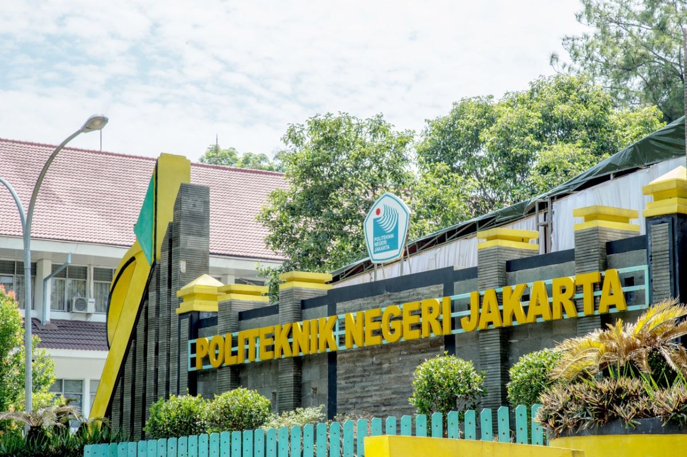
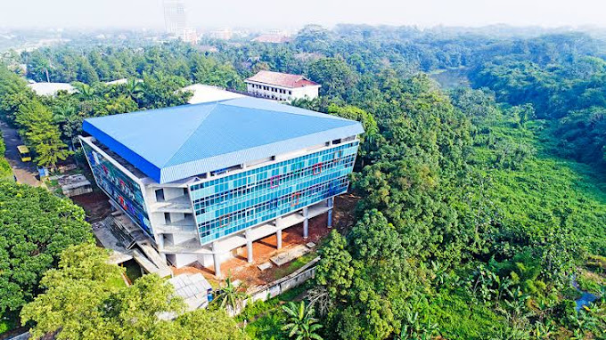

Nama: Puji Sulaiman | Kelas: TI 2B
|
 Keterangan: Gambar Tugu PNJ (Layout Table) |
Arahkan kursor dan klik area tertentu pada gambar:

Daftar Link Eksternal:
Navigasi Cepat:
Politeknik Negeri Jakarta (PNJ) berlokasi di Kampus UI Depok. Merupakan institusi pendidikan vokasi yang berfokus pada keahlian praktis.
↑ Kembali ke AtasPNJ mengelola berbagai jurusan teknik dan niaga, seperti Teknik Informatika, Teknik Mesin, Sipil, Elektro, hingga Akuntansi.
↑ Kembali ke AtasKoneksi PNJ sangat luas, mencakup kerjasama dengan perusahaan BUMN dan swasta besar untuk program magang.
↑ Kembali ke Atas